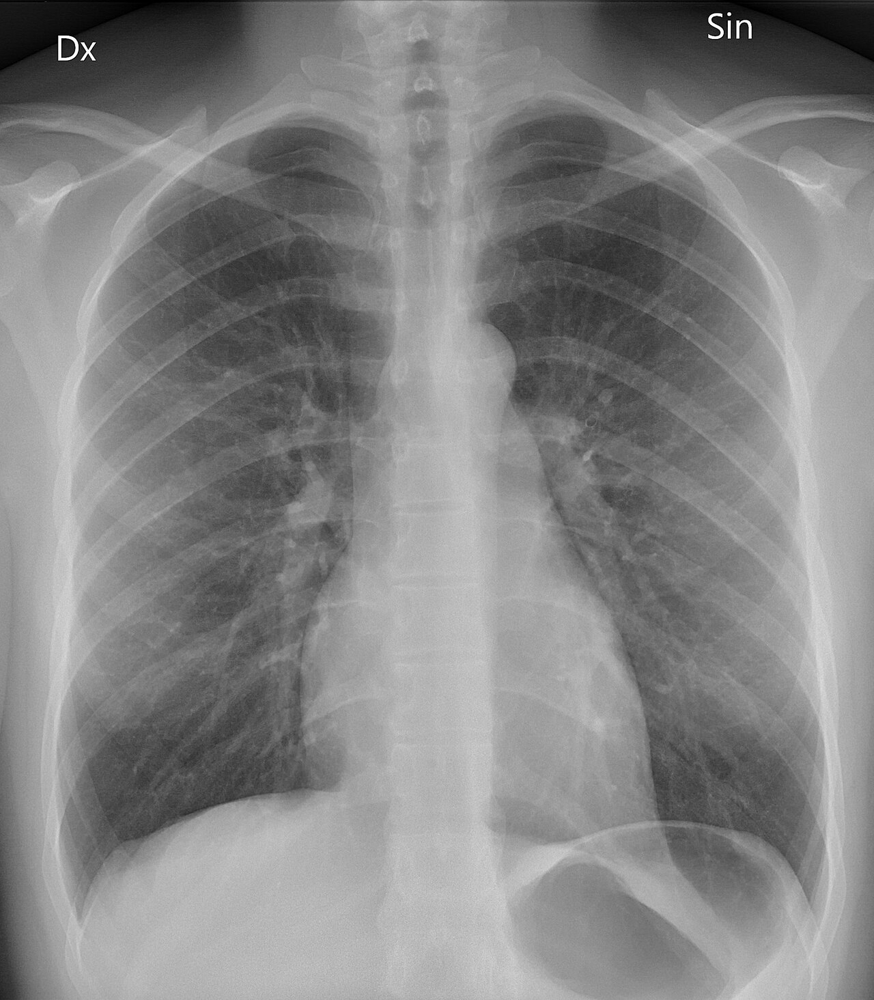

Research LabFive hands-on notebooks · open now
Build and evaluate models yourself: write code, test a model on real data and run a small project of your own.
- Python & GitHub
- Data science
- ML & imaging
- Advanced AI & NLP
- Mini project
Clinical AI education for radiology, from foundations to practice.
Explore the curriculumYour progress is saved to your account.
15 ungraded questions, about 10 minutes.
Each takes 15 to 20 minutes and has a few ungraded checks and one hands-on piece. Finish with the post-course quiz.
Open any time, separate from the core lessons. Module 1 is useful background for both.
Build and evaluate models yourself: write code, test a model on real data and run a small project of your own.
How a tool gets into a department, for the clinical, informatics and quality leads who choose, test and govern it.
Pick lessons and the post-course check, then share one link. Learners see your plan in their progress panel. A live class dashboard is in planning.
Open the plan builder

ai2practice/plan/pgy2-bodyChanges to the course and notes on AI in radiology, as they happen.
Read the AI2Practice BriefA place to swap rotation plans, ask about cases and suggest new lessons. First channels: Core curriculum, Research Lab, Leadership and Educators.